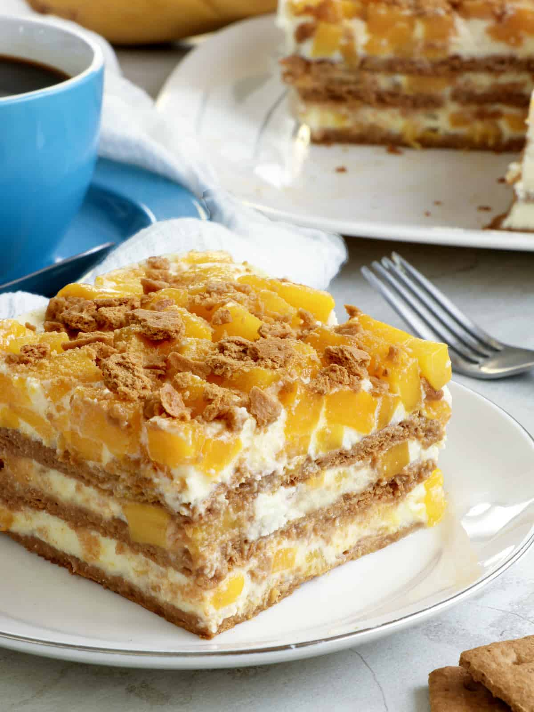

Mango Graham Cake

Description:
Indulge in the tropical delight of a Mango Graham Cake,
a no-bake dessert that layers ripe, juicy mangoes with creamy whipped
cream and crunchy graham crackers. Perfect for warm days,
this easy-to-make treat combines sweetness and texture in every bite,
making it a favorite for any occasion.
Ingredients:
- 4 ripe mangoes, sliced thinly
- 2 cups graham cracker crumbs
- 2 cups all-purpose cream, chilled
- 1 can sweetened condensed milk
Steps:
- Prepare the Cream Mixture: In a bowl, whip the heavy cream until soft peaks form. Gradually add the condensed milk and continue to whip until well combined.
- Create the Crust: In a separate bowl, mix the graham cracker crumbs with the melted butter until well combined.
- Assemble the layers:
- In a rectangular or square dish, spread a layer of graham cracker mixture.
- Spread a layer of the cream mixture over the graham crackers.
- Arrange a layer of mango slices over the cream.
- Repeat the layers until you fill the dish, ending with a layer of mango slices on top.
- Chill:Cover the dish and refrigerate for at least 4 hours, or overnight for best results.
- Serve:Slice and enjoy this refreshing dessert!